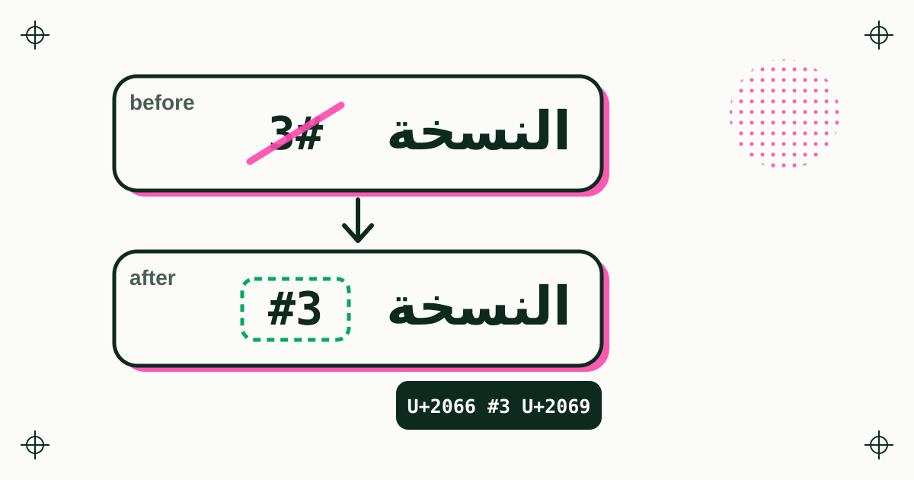

Keeping the copy number in order next to right-to-left text

Duo Clone wraps the copy number in a left-to-right isolate, so "#3" stays in order next to Arabic text instead of showing as "3#". The flip comes from the Unicode bidirectional algorithm: after Arabic letters the digit is treated as an Arabic number, and the number sign next to it takes the right-to-left direction. The fix adds two invisible characters, U+2066 before the number and U+2069 after it.
This note explains the rules behind the flip, what the isolate does, where Duo Clone adds it and where it deliberately does not, and what other apps that mix a label with a number can do.
What went wrong with "#3"?
Every copy has a number, shown as "#3" in its name, on its badge, in dialogs and in the quick-switch notification, and after an Arabic label or Arabic words the number sign appeared on the wrong side of the digit. A name that should read "label #3" showed "3#" in the right-to-left layout. The copy was still the right one, but the name looked wrong, and two copies of the same app are told apart by exactly this number.
Why does the number sign flip?
Three rules of the Unicode Bidirectional Algorithm combine: the digit becomes an Arabic number, the number sign becomes neutral, and the neutral takes the direction of its neighbours. Unicode Standard Annex #9 sets them out. In short:
- W2: the algorithm looks backward from a European number to the first strong character, and "if an AL is found, change the type of the European number to Arabic number". Arabic letters are type AL, so a digit after Arabic text counts as an Arabic number.
- W5 and W6: a number sign is a European terminator. W5 joins terminators to an adjacent European number, but the digit is no longer one, so W6 turns the sign into an "Other Neutral".
- N1: "A sequence of NIs takes the direction of the surrounding strong text if the text on both sides has the same direction", and numbers "act as if they were R" for this purpose. The space and the sign sit between Arabic letters and an Arabic number, so they take the right-to-left direction.
The sign is then laid out right to left, and it ends up to the right of the digit: "3#". Persian and Urdu are written with Arabic-script letters of the same type, so the same rules apply to them. Duo Clone is available in all three languages.
What does a left-to-right isolate do?
A directional isolate treats the text inside it as a separate run, so the surrounding text cannot change how it is ordered and it cannot change the order outside. UAX #9 says: "Characters within an isolate cannot affect the ordering of characters outside it, or vice versa." The left-to-right isolate is a pair of characters, U+2066 LEFT-TO-RIGHT ISOLATE and U+2069 POP DIRECTIONAL ISOLATE. They were introduced in Unicode 6.3, and the annex encourages isolates over embeddings in new documents.
Inside the pair, "#3" has no Arabic letter before it, so the digit stays a European number, W5 attaches the sign to it, and the pair reads left to right as "#3". The Arabic words around it keep their own direction. The W3C's article on inline bidi markup describes the same two characters as the way to get this effect in plain text, where markup such as a dir attribute is not available.
Where does Duo Clone add the isolate?
Since version 0.1.23, every string that holds a copy number wraps it, and so do the default names of new copies and the lines of the quick-switch notification.
- Interface strings. Every string resource with a "#" before a number puts the number inside the isolate, in every language that writes the number that way. An example is the badge text for the Arabic interface, where the number sits between U+2066 and U+2069.
- Default names. The default name of a new copy is built in code from the app's label and the number, not from a string. The isolate is added only when the label contains right-to-left letters, which the code finds with the character's directionality in Java. A label in a left-to-right script stays plain, so "Clock #3" has no hidden characters.
- Quick switch. The notification lists running copies as a number and a name, and the number is wrapped in the same way, on the line and on each button.
The isolate is limited to labels that need it because names are stored and the user can edit them. Invisible characters in every name would stay in the stored text and travel with it, for example into text the user copies out of the field. A unit test checks that left-to-right labels such as an English and a Vietnamese one stay plain, that right-to-left labels get the isolate, and that the detection looks at letters and not at digits or the number sign.
Is there another way to do this on Android?
Yes: Android's BidiFormatter wraps a string with the right marks for its context, and a fixed number format like "#3" can use an explicit isolate. The BidiFormatter reference says its unicodeWrap methods declare the direction of an inserted string and isolate it, and that isolating works through invisible direction marks. Duo Clone's number always reads left to right, so it uses the explicit pair. If the string you insert is unknown text, such as a user's name, a formatter that estimates the direction is the safer tool.
What should other developers take from this?
Whenever you place a number, a code or a tag next to text that can be right to left, isolate the fragment, and test with real Arabic words before and after it. A fragment that reads fine after English can flip after Arabic, because the algorithm looks back to the nearest strong letter. Put the isolate in the string resource where possible, so translators keep it, and keep it out of data that users edit or search.
Sources
- Unicode Consortium, UAX #9: Unicode Bidirectional Algorithm, rules W2, W5, W6 and N1 and the section on directional isolates, Unicode 18.0.0 edition of 1 September 2026 (read 27 November 2026).
- W3C Internationalization, Inline markup and bidirectional text in HTML: isolating characters in plain text (read 27 November 2026).
- Android Developers, BidiFormatter: wrapping and isolating strings (read 27 November 2026).
- Duo Clone changelog, version 0.1.23: "the copy number stays in order next to right-to-left text".